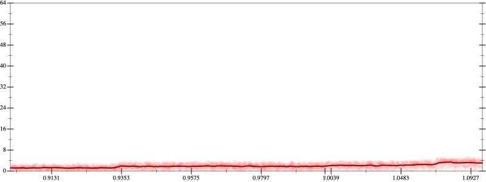
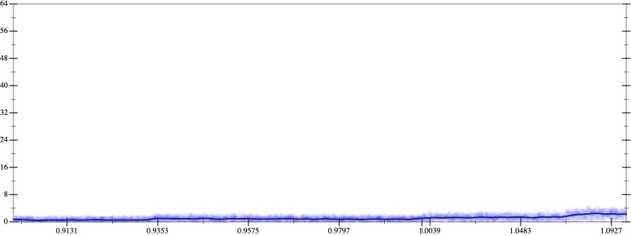
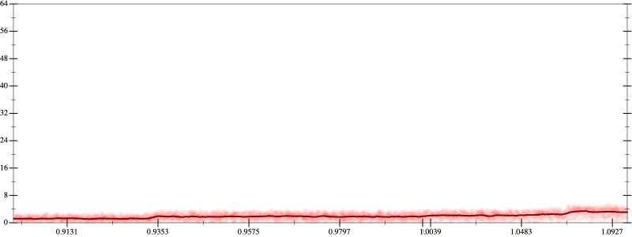
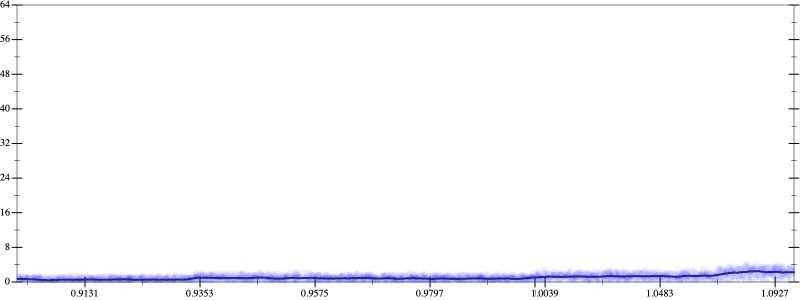

Initial program 1.9
\[\left(\left(\left(1680.0 + -13440.0 \cdot \left(x \cdot x\right)\right) + 13440.0 \cdot \left(\left(\left(x \cdot x\right) \cdot x\right) \cdot x\right)\right) + -3584.0 \cdot \left(\left(\left(\left(\left(x \cdot x\right) \cdot x\right) \cdot x\right) \cdot x\right) \cdot x\right)\right) + 256.0 \cdot \left(\left(\left(\left(\left(\left(\left(x \cdot x\right) \cdot x\right) \cdot x\right) \cdot x\right) \cdot x\right) \cdot x\right) \cdot x\right)\]
Applied simplify1.8
\[\leadsto \color{blue}{\left(\left(\left(x \cdot 13440.0\right) \cdot {x}^{3} + x \cdot \left(x \cdot -13440.0\right)\right) + 1680.0\right) + \left({x}^{3} \cdot {x}^{3}\right) \cdot \left(-3584.0 + \left(256.0 \cdot x\right) \cdot x\right)}\]
Taylor expanded around -inf 63.6
\[\leadsto \color{blue}{\left(13440.0 \cdot \left(e^{3 \cdot \left(\log -1 - \log \left(\frac{-1}{x}\right)\right)} \cdot x\right) + \left(1680.0 + 256.0 \cdot \left({\left(e^{3 \cdot \left(\log -1 - \log \left(\frac{-1}{x}\right)\right)}\right)}^{2} \cdot {x}^{2}\right)\right)\right) - \left(13440.0 \cdot {x}^{2} + 3584.0 \cdot {\left(e^{3 \cdot \left(\log -1 - \log \left(\frac{-1}{x}\right)\right)}\right)}^{2}\right)}\]
Applied simplify1.1
\[\leadsto \color{blue}{\left({x}^{3} \cdot {x}^{3}\right) \cdot \left(256.0 \cdot \left(x \cdot x\right) - 3584.0\right) + \left(\left({x}^{3} - x\right) \cdot \left(13440.0 \cdot x\right) + 1680.0\right)}\]
- Using strategy
rm Applied flip3--1.0
\[\leadsto \left({x}^{3} \cdot {x}^{3}\right) \cdot \left(256.0 \cdot \left(x \cdot x\right) - 3584.0\right) + \left(\color{blue}{\frac{{\left({x}^{3}\right)}^{3} - {x}^{3}}{{x}^{3} \cdot {x}^{3} + \left(x \cdot x + {x}^{3} \cdot x\right)}} \cdot \left(13440.0 \cdot x\right) + 1680.0\right)\]
- Using strategy
rm Applied sub-neg1.0
\[\leadsto \left({x}^{3} \cdot {x}^{3}\right) \cdot \color{blue}{\left(256.0 \cdot \left(x \cdot x\right) + \left(-3584.0\right)\right)} + \left(\frac{{\left({x}^{3}\right)}^{3} - {x}^{3}}{{x}^{3} \cdot {x}^{3} + \left(x \cdot x + {x}^{3} \cdot x\right)} \cdot \left(13440.0 \cdot x\right) + 1680.0\right)\]
Applied distribute-lft-in1.0
\[\leadsto \color{blue}{\left(\left({x}^{3} \cdot {x}^{3}\right) \cdot \left(256.0 \cdot \left(x \cdot x\right)\right) + \left({x}^{3} \cdot {x}^{3}\right) \cdot \left(-3584.0\right)\right)} + \left(\frac{{\left({x}^{3}\right)}^{3} - {x}^{3}}{{x}^{3} \cdot {x}^{3} + \left(x \cdot x + {x}^{3} \cdot x\right)} \cdot \left(13440.0 \cdot x\right) + 1680.0\right)\]
Applied associate-+l+1.0
\[\leadsto \color{blue}{\left({x}^{3} \cdot {x}^{3}\right) \cdot \left(256.0 \cdot \left(x \cdot x\right)\right) + \left(\left({x}^{3} \cdot {x}^{3}\right) \cdot \left(-3584.0\right) + \left(\frac{{\left({x}^{3}\right)}^{3} - {x}^{3}}{{x}^{3} \cdot {x}^{3} + \left(x \cdot x + {x}^{3} \cdot x\right)} \cdot \left(13440.0 \cdot x\right) + 1680.0\right)\right)}\]
 
